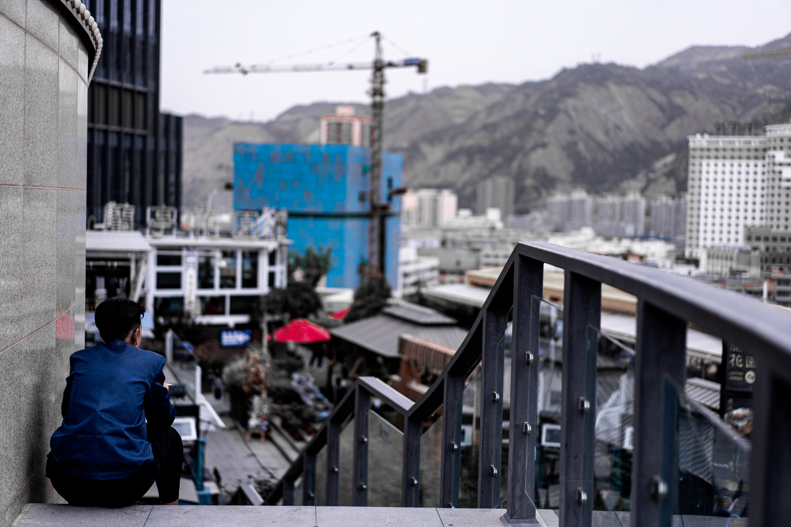
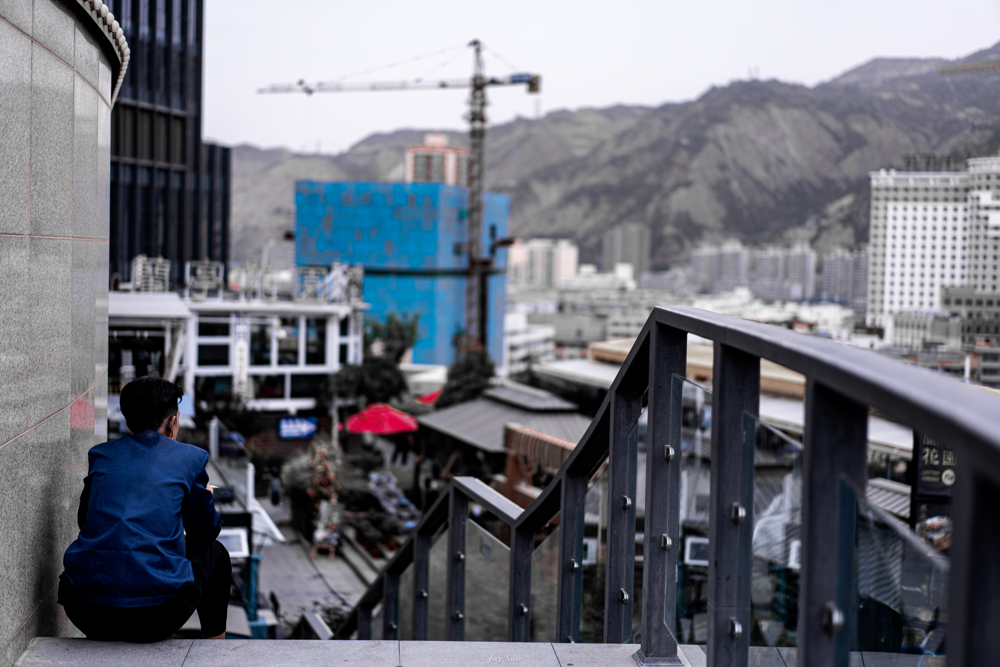
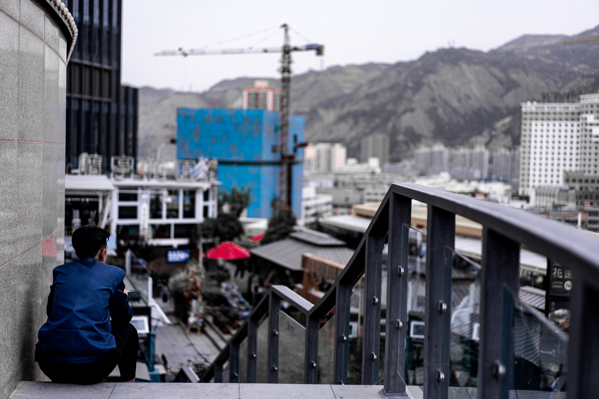

Lanzhou is the capital city of Gansu Province in the People's Republic of China. Nestled along the banks of the Yellow River, it is a significant city in Western China, known for its unique geographical features, historical significance, and cultural richness. Lanzhou serves as an important industrial, commercial, and transportation hub, bridging the East and the West of China.
